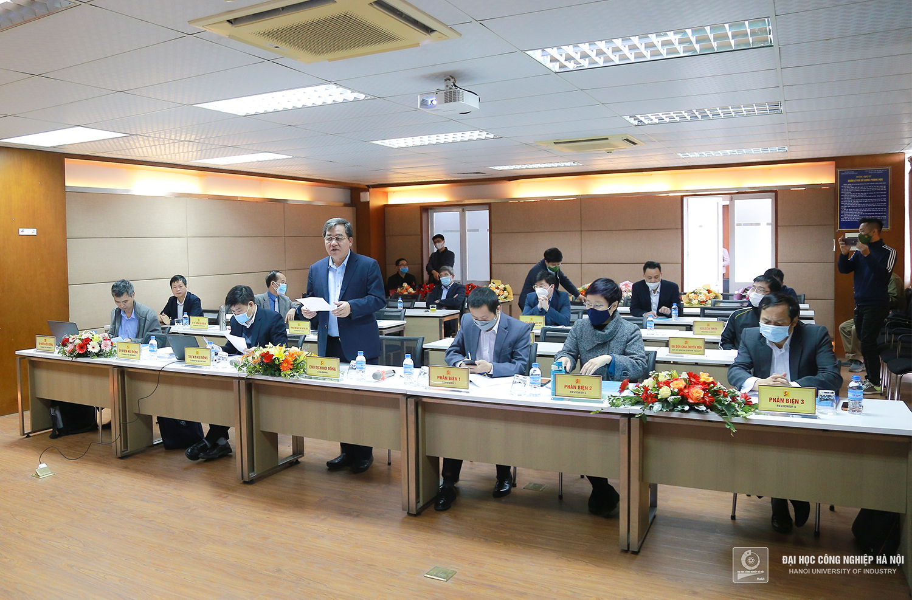
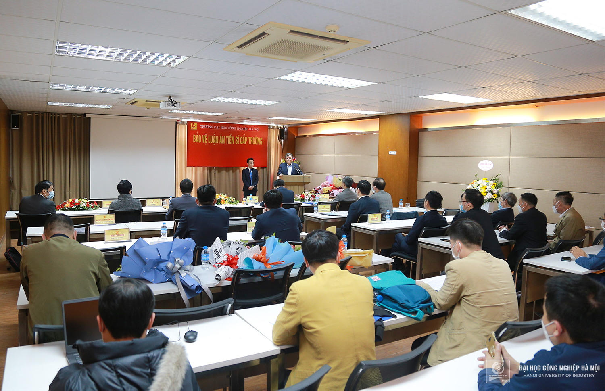
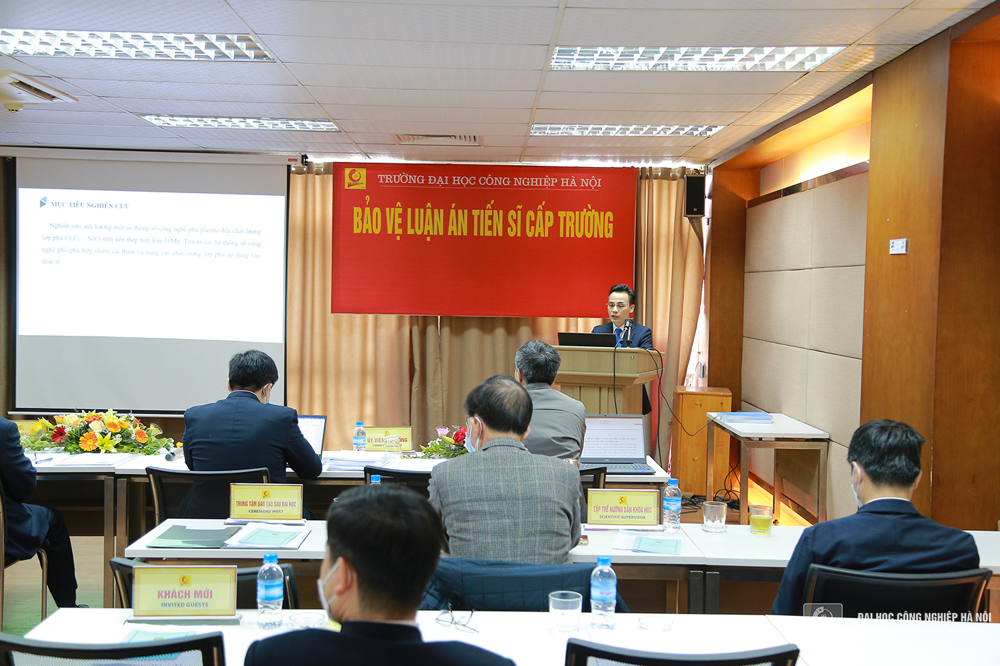
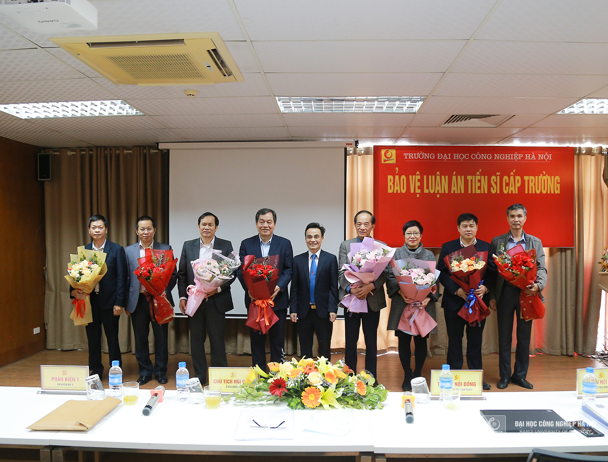
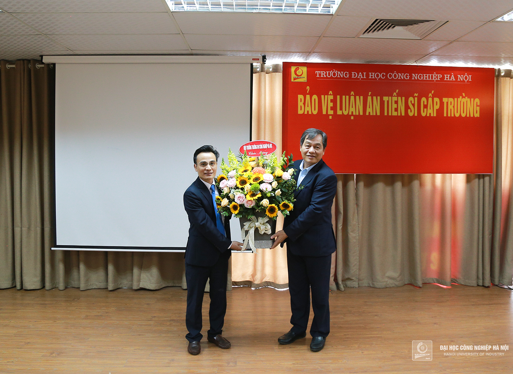
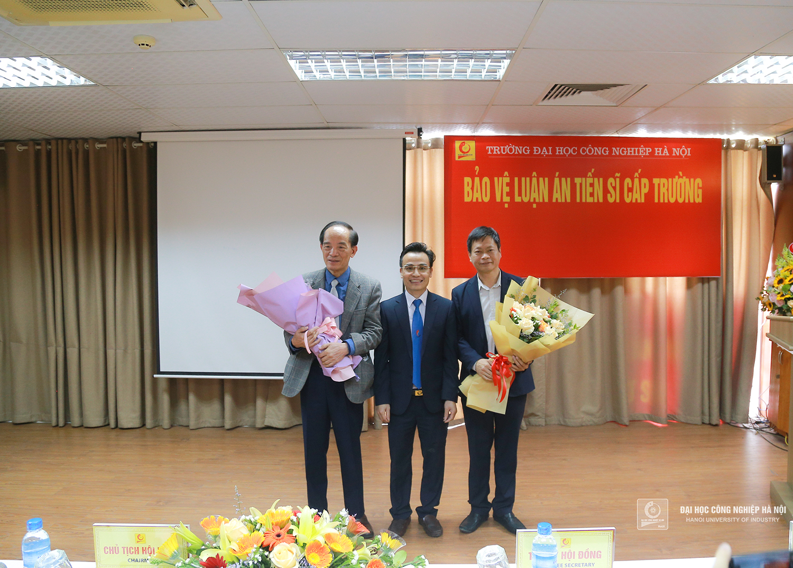
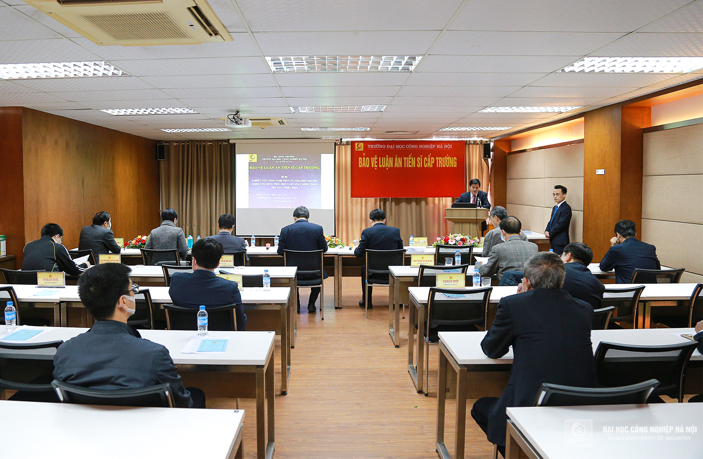

NCS Đặng Xuân Thao bảo vệ thành công Luận án Tiến sĩ cấp trường
Sáng ngày 02/4, NCS Đặng Xuân Thao - Giảng viên Trung tâm Cơ khí - Trường Đại học Công nghiệp Hà Nội đã bảo vệ thành công Luận án Tiến sĩ ngành Kỹ thuật cơ khí.Với sự hướng dẫn khoa học của: PGS.TS. Phạm Đức Cường - Viện Công nghệ, Trường ĐHCN Hà Nội và PGS.TS. Hoàng Văn Gợt – Viện nghiên cứu cơ khí, N CS Đặng Xuân Thao đã hoàn thành Luận án Tiến sĩ với đề tài: Nghiên cứu công nghệ phun plasma hợp kim nền Crom, ứng dụng phục hồi cánh quạt khói trong nhà máy nhiệt điện. Kết quả nghiên cứu được Hội đồng chấm Luận án đánh giá cao tính khoa học và thực tiễn.
PGS.TS.Trần Đức Quý – Hiệu trưởng Nhà trường, Chủ tịch Hội đồng bảo vệ Luận án
Hội đồng đánh giá Luận án với sự tham gia của:
1. PGS.TS. Trần Đức Quý - Trường ĐH Công nghiệp Hà Nội - Chủ tịch Hội đồng
2. PGS.TS. Hoàng Tiến Dũng - Trường ĐH Công nghiệp Hà Nội – Uỷ viên,Thư ký
3. PGS.TS. Lê Thu Quý - Viện Nghiên cứu Cơ khí – Uỷ viên, Phản biện 1
4. PGS.TS. Nguyễn Thị Hồng Minh - Trường ĐH Bách Khoa Hà Nội – Uỷ viên, Phản biện 2
5. PGS.TS. Vũ Ngọc Pi - Đại học Thái Nguyên – Uỷ viên, Phản biện 3
6. TS. Nguyễn Hữu Quang - Trường Đại học KT-KT Công nghiệp - Ủy viên
7. TS. Nguyễn Xuân Chung - Trường ĐH Công nghiệp Hà Nội - Ủy viên
Hội đồng đã thông qua lý lịch khoa học, quá trình học tập và kết quả nghiên cứu khoa học của NCS Đặng Xuân Thao trong suốt thời gian thực hiện đề tài. Các thành viên đánh giá cao những kết quả nghiên cứu học tập và những nỗ lực của NCS.
Toàn cảnh buổi bảo vệ Luận án Tiến sĩ của NCS Đặng Xuân Thao tại Đại học Công nghiệp Hà Nội
Trình bày kết quả nghiên cứu, NCS đã báo cáo những đóng góp mới của Luận án như: xây dựng được các phương trình hàm hồi quy thực nghiệm thể hiện mối quan hệ giữa độ bền bám dính, độ bền bám trượt, độ bền kéo, độ xốp và độ cứng tế vi của lớp phủ với bộ thông số công nghệ gồm để dự phủ đoán chất lượng lớp phủ; xác định được các bộ thông số phun phù hợp từng chỉ tiêu chất lượng nhằm đạt được độ bền bám dính, độ bền bám trượt, độ bền kéo, độ cứng tế vi của lớp phủ là cao nhất và độ xốp lớp phủ là nhỏ nhất; ứng dụng kết quả nghiên cứu của luận án vào phục hồi thành công 14 cánh quạt khói bị mòn của nhà máy nhiệt điện, tạo tiền đề để ứng dụng rộng rãi cho các sản phẩm công nghiệp có điều kiện làm việc tương tự.
NCS Đặng Xuân Thao trình bày tại buổi bảo vệ Luận án
Hội đồng chấm Luận án đánh giá cao ý nghĩa khoa học, độ tin cậy và những đóng góp mới của Luận án, 5/7 phiếu đánh giá Luận án đạt kết quả xuất sắc và đề nghị Đại học Công nghiệp Hà Nội công nhận học vị, cấp bằng Tiến sĩ cho NCS Đặng Xuân Thao.
Hội đồng chúc mừng NCS Đặng Xuân Thao bảo vệ thành công Luận án Tiến sĩ cấp trường
Một số hình ảnh tại buổi bảo vệ Luận án:
  Thứ Bảy, 14:00 02/04/2022